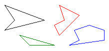
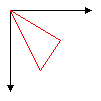

A polygon is a closed figure with three or more straight sides. For example, a triangle is a polygon with three sides, a rectangle is a polygon with four sides, and a pentagon is a polygon with five sides. The following illustration shows several polygons.

To draw a polygon, you need a Graphics object, a Pen object, and an array of Point (or PointF) objects. The Graphics object provides the DrawPolygon method. The Pen object stores attributes of the polygon, such as line width and color, and the array of Point objects stores the points to be connected by straight lines. The addresses of the Pen object and the array of Point objects are passed as arguments to the DrawPolygon method. The following example draws a three-sided polygon. Note that there are only three points in myPointArray: (0, 0), (50, 30), and (30, 60). The DrawPolygon method automatically closes the polygon by drawing a line from (30, 60) back to the starting point (0, 0);
Point myPointArray[] =
{Point(0, 0), Point(50, 30), Point(30, 60)};
myGraphics.DrawPolygon(&myPen, myPointArray, 3);
The following illustration shows the polygon.

Â
Â